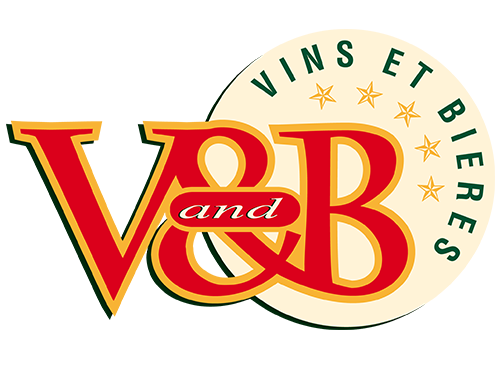

<!-- <!DOCTYPE html>
<html>

<head>
  <meta charset="utf-8">
  <title>Cartographie Leaflet</title>
  <link rel="stylesheet" href="http://cdn.leafletjs.com/leaflet/v0.7.7/leaflet.css" />
</head>

<body>
  <div id="macarte" style="width:545px; height:490px">


  </div>
  <script src="http://cdn.leafletjs.com/leaflet/v0.7.7/leaflet.js">
    var carte = L.map('macarte').setView([46.3630104, 2.9846608], 6);
    L.tileLayer('http://{s}.tile.osm.org/{z}/{x}/{y}.png', {
      attribution: '&copy; <a href="http://osm.org/copyright">OpenStreetMap</a> contributors'
    }).addTo(carte);
  </script>
</body>

</html> -->

<!DOCTYPE html>
<html lang="fr">

<head>
  <!--
            Inclusion de la bibliothèque Leaflet et sa feuille de style.
            L'include du js pourrait aussi être fait a la fin du <body>
        -->
  <link rel="stylesheet" href="https://cdnjs.cloudflare.com/ajax/libs/leaflet/0.7.7/leaflet.css" />
  <script src="https://cdnjs.cloudflare.com/ajax/libs/leaflet/0.7.7/leaflet.js"></script>

  <!-- Une feuille de style éventuel -->
  <link rel="stylesheet" href="style.css">

  <title>Tutoriel Leaflet OSM</title>
</head>

<body>
  <!-- Le conteneur de notre carte (avec une contrainte CSS pour la taille -->
  <div id="macarte" style="width:100%; height:700px"></div>

  <script>
    var carte = L.map('macarte').setView([43.2121610, 2.3536630], 9);
    L.tileLayer('http://{s}.tile.osm.org/{z}/{x}/{y}.png', {
      attribution: '&copy; <a href="http://osm.org/copyright">OpenStreetMap</a> contributors'
    }).addTo(carte);

    // VNB Carcassonne

    var vandbIcon = L.icon({
      iconUrl: 'logoVandb.png',
      // shadowUrl: 'leaf-shadow.png',

      iconSize: [75, 98], // size of the icon
      // shadowSize: [50, 64], // size of the shadow
      iconAnchor: [22, 94], // point of the icon which will correspond to marker's location
      // shadowAnchor: [4, 62], // the same for the shadow
      popupAnchor: [-3, -76] // point from which the popup should open relative to the iconAnchor
    });
    L.marker([43.21, 2.32], {
      icon: vandbIcon
    }).addTo(carte);


    // var markerCarcassonne = L.marker([43.2035520, 2.3100510]).addTo(carte);


    // markerCarcassonne.bindPopup('<p><a href = "https://magasin.vandb.fr/766405-v-and-b-carcassonne">V & B Carcassonne</a></p>'); // Je ne mets pas de texte par défaut
    // var mapopup = markerCarcassonne.getPopup();

    // VNB Narbonne
    var markerNarbonne = L.marker([43.1663220, 2.9894500]).addTo(carte);


    markerNarbonne.bindPopup('' + '<p><a href = "https://magasin.vandb.fr/766453-v-and-b-narbonne">V & B Narbonne</a></p>'); // Je ne mets pas de texte par défaut
    var mapopup = markerNarbonne.getPopup();

    // VNB Motpellier
    var markerMontpellier = L.marker([43.5837690, 3.9226020]).addTo(carte);

    markerMontpellier.bindPopup('' + '<p><a href = "https://magasin.vandb.fr/766449-v-and-b-montpellier">V & B Montpellier</a></p>'); // Je ne mets pas de texte par défaut
    var mapopup = markerMontpellier.getPopup();
  </script>
</body>

</html>
